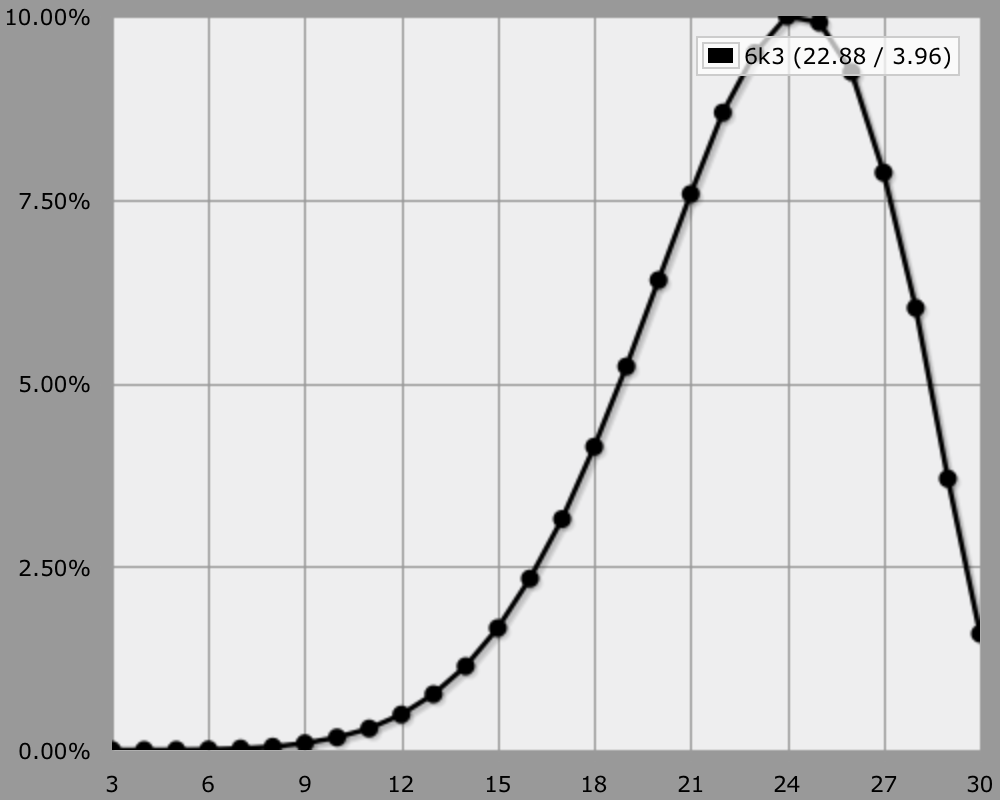
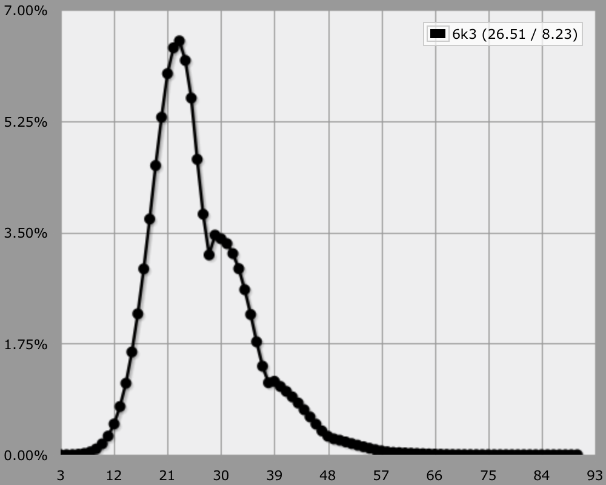
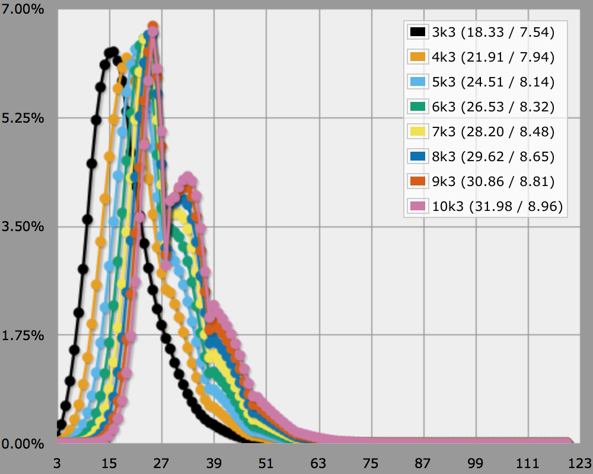
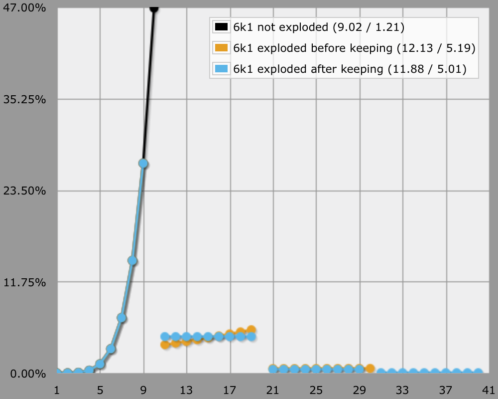

Legend of the Five Rings
Keeping Dice
There are quite a number of people visiting AnyDice that want to know the odds for the Legend of the Five Rings RPG. The core mechanic consists of rolling up to ten exploding d10 and summing some of the highest dice rolled. Well, technically you could pick any of the dice rolled to sum, but everyone always wants the highest.
So how to do something like "6 keep 3" in AnyDice? You can start by using the highest NUMBER of DICE function.
output [highest 3 of 6d10] named "6k3"

This seems to work nice, but it doesn't use exploding dice. To add explosions, you can use the explode DIE function, which by default creates a die that exploded up to two times.
output [highest 3 of 6d [explode d10]] named "6k3"

This works fine, but unfortunately it takes a while to compute. If you're rolling only a few dice then this isn't a problem, but AnyDice might choke on more. This is because an exploding die is a lot bigger than a regular die, which makes selecting the highest few a lot more expensive to compute. If you're using regular d10, then AnyDice performs just fine.
The Best of Both Worlds
Can we get the results of exploding dice, with the performance of regular dice? It turns out that we can, if we postpone exploding dice after keeping the highest. While this is not exactly the same as exploding first, then selecting the highest exploded dice, the results are nearly identical. Perhaps this is even the official method? I'm not sure.
So we have to keep track of which dice need to be exploded, take the highest of those and sum them, then add the explosions later. We can do that with a custom die that makes the 10s easy to track. A d{1..9, 1000} does the job.
output [highest 3 of 6d{1..9, 1000}] named "bogus"
Next, we need a function that converts those 1000s into exploded d10.
function: convert SUM:n {
if SUM >= 1000 {
TENSROLLED: SUM / 1000
result: SUM - TENSROLLED * 990 + TENSROLLED d [explode d10]
}
result: SUM
}
output [convert [highest 3 of 6d{1..9, 1000}]] named "6k3 exploded after keeping"
This gets us what we want, but it's a convoluted way to say "6k3". As a finishing touch, we can create a nice wrapper function.
function: ROLLSIZE:n k KEEPSIZE:n {
result: [convert [highest KEEPSIZE of ROLLSIZE d{1..9, 1000}]]
}
output [6k3] named "handy 6k3"
We now have an easy to use roll-and-keep function, and it is fast too! Here is a demonstration.
loop POOL over {3..10} {
output [POOL k3] named "[POOL]k3"
}

Comparison
Finally, here's a rather extreme example illustrating the difference between the three approaches.
output [highest 1 of 6d10] named "6k1 not exploded" output [highest 1 of 6d[explode d10]] named "6k1 exploded before keeping" output [6k1] named "6k1 exploded after keeping"
